Префектура Киото · Арасияма и Сагано · осень и храмы
Арасияма и Сагано осенью: клёны императоров и храм «Повести о Гэндзи»
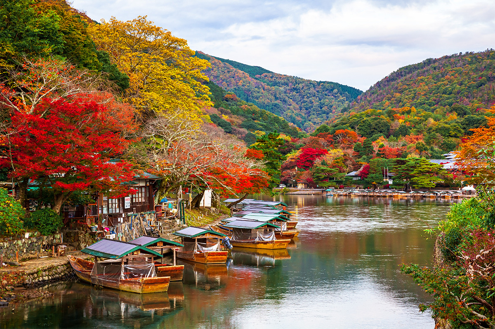
Арасияма и Сагано на западной окраине Киото больше тысячи лет служили загородным уголком императоров и аристократов. Осенью клёны здесь горят так, что о них слагали стихи, а храмы стоят так близко, что их можно обойти пешком за день.
Сезон
Осень, которую любили при дворе
Арасияма и Сагано лежат на западе Киото и считаются одним из главных пейзажей города. Император Сага (786–842) построил здесь загородный дворец, и с эпохи Хэйан эти места стали дачным краем знати. Сегодня здесь стоят храм Тэнрю-дзи, внесённый в список всемирного наследия ЮНЕСКО, храм Дайкаку-дзи, выросший из дворца императора Саги, и много других старых храмов.
Красивы здесь все времена года, но особенно славятся горы Арасияма и Огура, стоящие друг против друга по берегам реки Кацура, которую в этих местах зовут Оигава. Весной сюда едут за сакурой, осенью за клёнами. На склоне Огуры, по преданию, поэт Тэйка Фудзивара (1162–1241) составил «Огура хякунин иссю», знаменитую антологию «Сто стихотворений ста поэтов». В ней есть стихотворение о здешних клёнах: если у листьев на вершине Огуры есть сердце, пусть они не облетают и дождутся ещё одного приезда государя.
Нашим проводником по осенней Арасияме стал фотограф Кацухико Мидзуно. Он родился в Киото в 1941 году и с 1969 года снимает пейзажи, сады и архитектуру родного города. Его называют первым мастером «киотской фотографии».
«Ярко краснеющий осенью клён японский в Киото зовут ещё такао-момидзи: его много растёт в горах Такао. Киотская осень держится именно на нём, и в Арасияме и Сагано он даёт удивительные виды»
фотограф Кацухико Мидзуно
Любоваться клёнами, по его словам, лучше всего утром. Окрашенный лист хорошо пропускает свет, поэтому смотреть на него стоит против солнца. Клён, светящийся в утренней дымке, выглядит почти драгоценным.
Прогулку можно начать с воды. Лодочная компания «Арасияма Цусэн» катает гостей на лодках с крышами: лодочник ведёт их шестом, как во времена хэйанских катаний по реке. Летом, с 1 июля по 23 сентября, отсюда же смотрят ловлю рыбы с бакланами.
Прогулочные лодки «Арасияма Цусэн»
- Адрес
- префектура Киото, Киото, Укё-ку, Сага-Тэнрюдзи-Сусукинобаба-тё (северный причал); Нисикё-ку, Арасияма-Наканосимо-тё (южный причал)
- Телефон
- +81 75-861-0302
- Часы работы
- 9:00–16:00; с 1 июля по 23 сентября 12:00–17:00 и 18:00–21:00 (в сентябре до 20:30); с третьей среды декабря до второго понедельника марта 10:00–16:00. Без брони лодки отходят по мере сбора гостей
- Цены / Вход
- 3 700 иен за лодку на двоих взрослых, каждый следующий взрослый 1 200 иен, ребёнок 600 иен
Маршрут
Ожерелье из красных клёнов
«В Арасияме и Сагано всё главное собрано в круге два-три километра по прямой. Если соединить места с клёнами, получится ожерелье из красных камней»
фотограф Кацухико Мидзуно
Мидзуно советует идти в таком порядке: Тэнрю-дзи, Дзёдзякко-дзи, Нисон-ин, Сэйрё-дзи и Дайкаку-дзи. В каждом храме лучше провести час, а если времени мало, то хотя бы полчаса.
Тэнрю-дзи: пруд в осеннем наряде
Сад Согэнти сохранил облик времён основания храма в 1339 году. Это сад для прогулок вокруг пруда, и в него «вписаны» горы Камэяма, Огура и Арасияма. В сезон клёнов храм обычно открывает ворота рано утром.
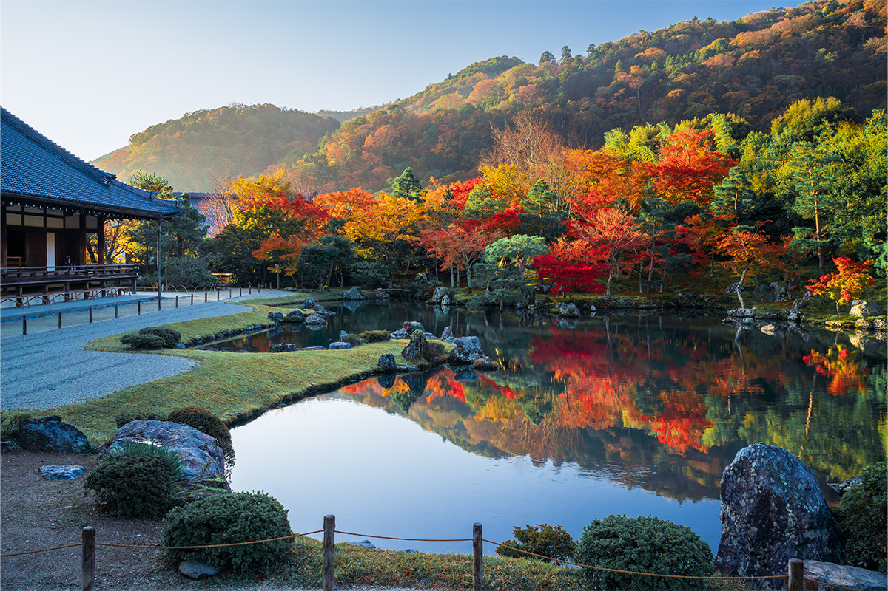
Храм Тэнрю-дзи
- Адрес
- префектура Киото, Киото, Укё-ку, Сага-Тэнрюдзи-Сусукинобаба-тё, 68
- Телефон
- +81 75-881-1235
- Часы работы
- сады Согэнти и Хякка-эн 8:30–17:00 (вход до 16:50); залы 8:30–16:45 (вход до 16:30)
- Цены / Вход
- сады 500 иен, школьники 300 иен, дошкольники бесплатно; залы плюс 300 иен к билету в сад. Роспись с драконом в зале Хатто показывают по субботам, воскресеньям и праздникам с 9:00 до 16:30, отдельно 500 иен; весной, летом и осенью бывают дни ежедневного показа
Дзёдзякко-дзи: столица вдали, клёны рядом
Храм стоит на середине склона горы Огура и основан в годы Кэйтё (1596–1614), в эпоху Адзути-Момояма. Отсюда вдалеке видно город, а вокруг со всех сторон клёны.
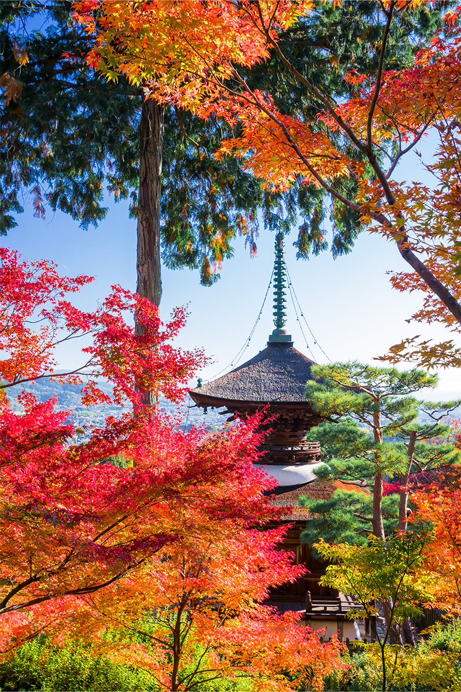
«Территория храма идёт уступами, поэтому с каждого места вид немного другой»
фотограф Кацухико Мидзуно
Храм Дзёдзякко-дзи
- Адрес
- префектура Киото, Киото, Укё-ку, Сага-Огураяма-Огура-тё, 3
- Телефон
- +81 75-861-0435
- Часы работы
- 9:00–17:00 (вход до 16:30)
- Цены / Вход
- 500 иен, дети до начальной школы включительно 200 иен
Нисон-ин: тоннель из листвы
Храм основан в годы Сёва (834–848) по указу императора Саги. К главному залу ведёт аллея, над которой красные и жёлтые листья смыкаются в тоннель.
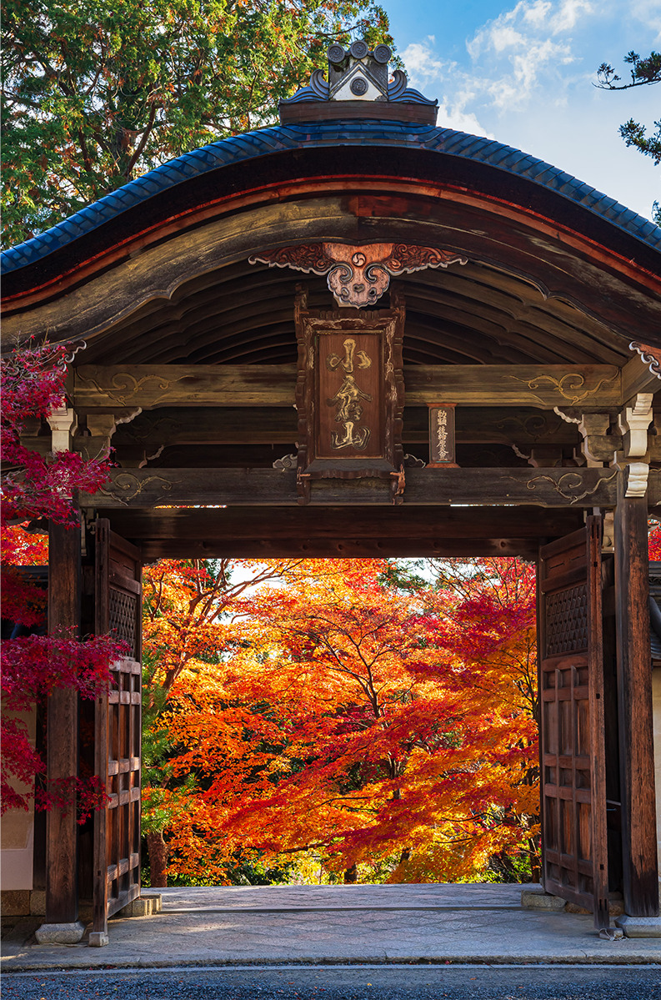
«В изогнутой крыше этих ворот чувствуется изящество придворной эпохи»
фотограф Кацухико Мидзуно
Храм Нисон-ин
- Адрес
- префектура Киото, Киото, Укё-ку, Сага-Нисонъин-Мондзэн-Тёдзин-тё, 27
- Телефон
- +81 75-861-0687
- Часы работы
- 9:00–16:30 (последний вход)
- Цены / Вход
- 500 иен, дети до начальной школы включительно бесплатно
Дайкаку-дзи: сад императора Саги
Храм открыт в 876 году на месте загородного дворца императора Саги, и его до сих пор называют «Старым дворцом Сага». Он делится на две части: залы, среди которых парадный зал синдэн и главный зал, и сад с прудом Осава, который устроил сам император.
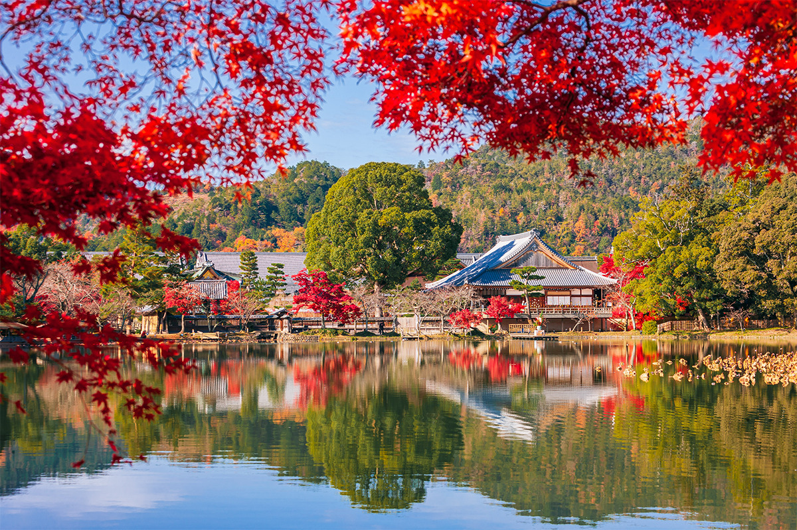
Храм Дайкаку-дзи
- Адрес
- префектура Киото, Киото, Укё-ку, Сага-Осава-тё, 4
- Телефон
- +81 75-871-0071
- Часы работы
- 9:00–17:00 (вход до 16:30)
- Цены / Вход
- залы 500 иен, школьники 300 иен; пруд Осава 300 иен, школьники 100 иен
Сэйрё-дзи
Храм, который построил принц Гэндзи
Недалеко от Дайкаку-дзи, на месте с видом на гору Атаго, стоит храм Сэйрё-дзи, который чаще зовут Сага Сяка-до, «Зал Будды Шакьямуни в Саге». Его история уходит в эпоху Хэйан, и с ним связано много литературы и легенд.
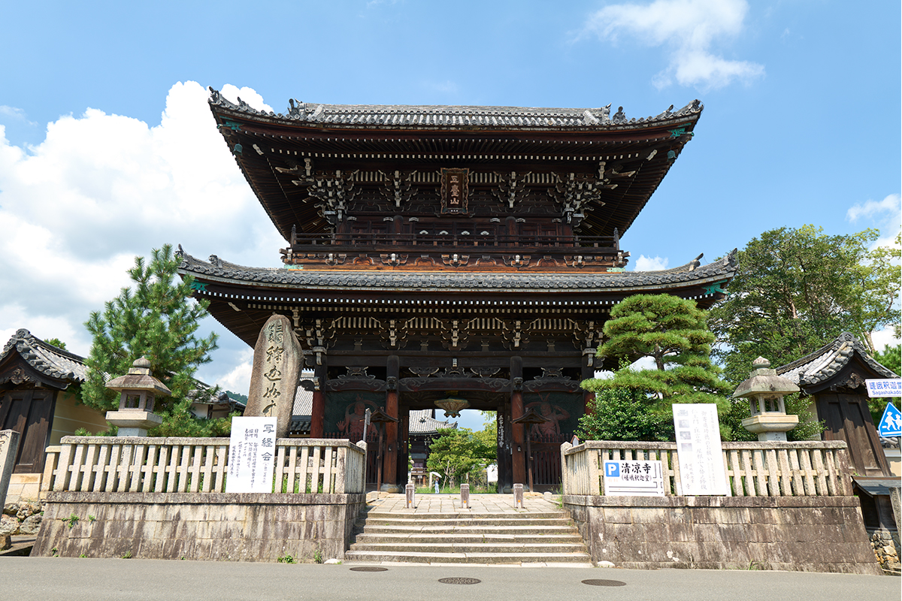
Началом храма считают зал Амида-до в восточной части двора. В начале эпохи Хэйан здесь стояла загородная усадьба Сэйкакан, принадлежавшая Тору Минамото (822–895), двенадцатому сыну императора Саги. Он дослужился до поста левого министра и считается одним из прообразов Хикару Гэндзи, «блистательного принца» из «Повести о Гэндзи» Мурасаки Сикибу.
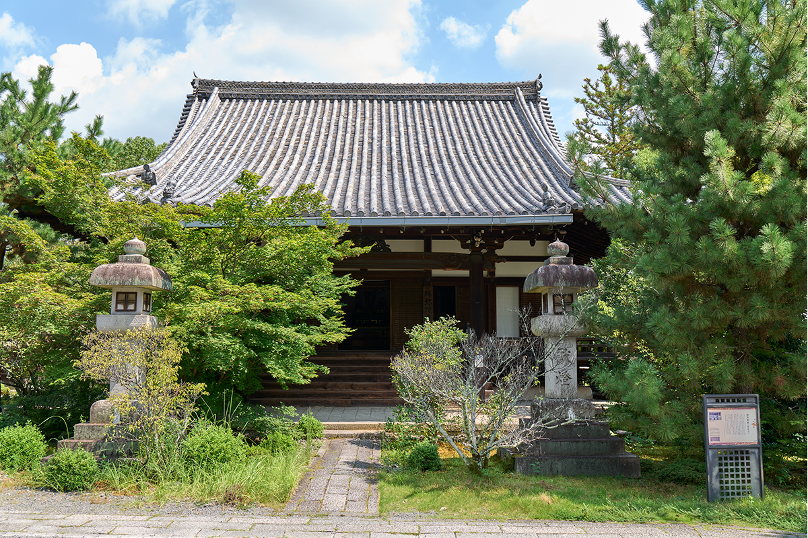
Место усадьбы и есть один из доводов в пользу того, что Гэндзи списан с Тору Минамото. В романе Гэндзи строит «храм в Саге», и в главе «Ветер в соснах» сказано, что он находится к югу от Дайкаку-дзи. Это точно совпадает с местом Сэйкакан.
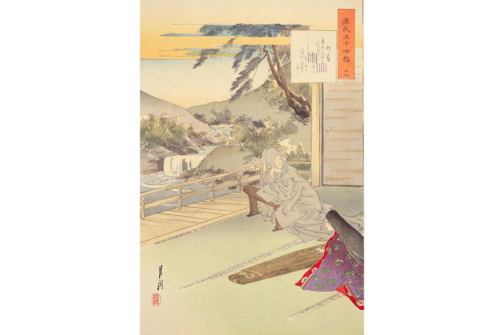
Каким был сам Тору Минамото, можно представить в сокровищнице храма. Её открывают весной (апрель и май) и осенью (октябрь и ноябрь). У входа встречает триада Амиды, национальное сокровище. Статуи сделали двое сыновей Тору Минамото в 896 году, на следующий год после его смерти, и когда-то они стояли в зале Амида-до.
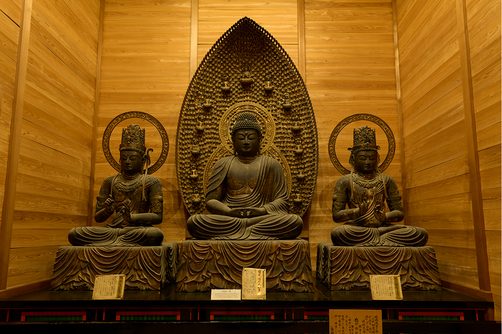
Есть версия, что Тору Минамото, глубоко веривший в Амиду, ещё при жизни велел вырезать статую со своим лицом. Её даже называют «лицом Гэндзи». Прямой нос и тонкие черты сразу выдают хэйанского аристократа.
«Живой Будда» в главном зале
После того как в усадьбе поставили триаду Амиды, она стала храмом Сэйка-дзи и простояла так больше 120 лет. В 986 году монах Тёнэн (938–1016) из храма Тодай-дзи привёз из Китая эпохи Сун статую Будды Шакьямуни, и её поставили здесь же. Так появился храм Сэйрё-дзи, каким мы его знаем.
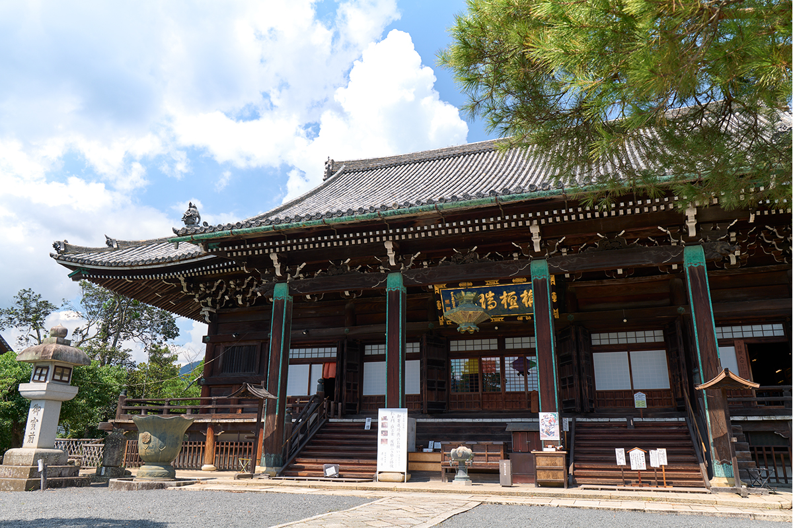
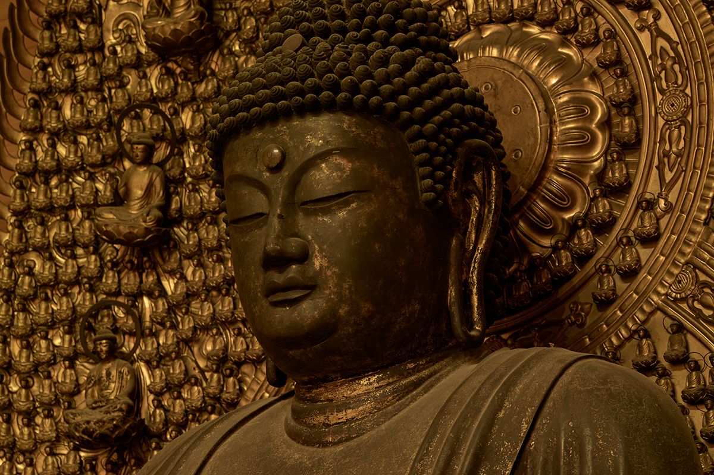
Стоящий Шакьямуни, национальное сокровище и главная святыня храма, хранит внутри удивительные вещи. В 1953 году в статуе нашли документы, сутры, гравюры и сшитые из шёлка внутренние органы. Поэтому её и зовут «живым Буддой». Всё, что нашли внутри, выставлено в сокровищнице, и рассмотреть это можно вблизи.
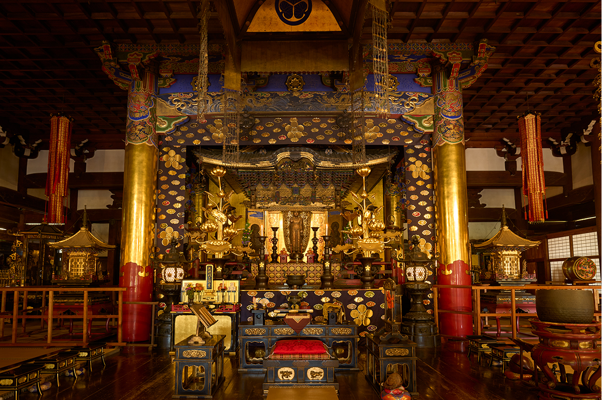
Храм хранит и другие страницы истории. В 1156 году сюда на семь дней пришёл молиться монах Хонэн (1133–1212), будущий основатель школы Чистой земли. В 1217 году Сяка-до и Сэйка-дзи сгорели и были отстроены заново, а в 1443 году здесь впервые сыграли «Дайнэмбуцу кёгэн», храмовые комические представления, которые дают до сих пор.
Осень за окном галереи
Главный зал и жилые покои кури соединяет крытая галерея. Попасть в неё можно с билетом в главный зал, и это лучшее место в храме, чтобы смотреть на клёны: окна служат рамой для картины.
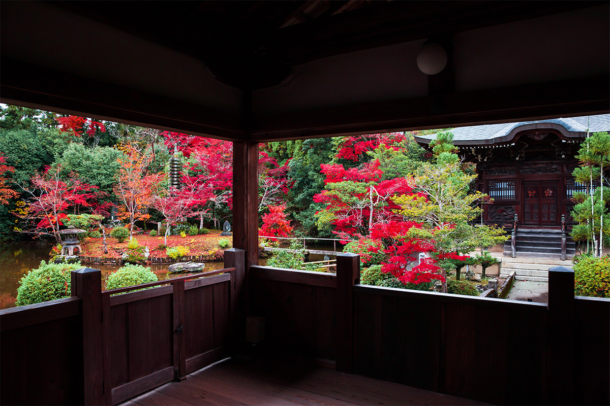
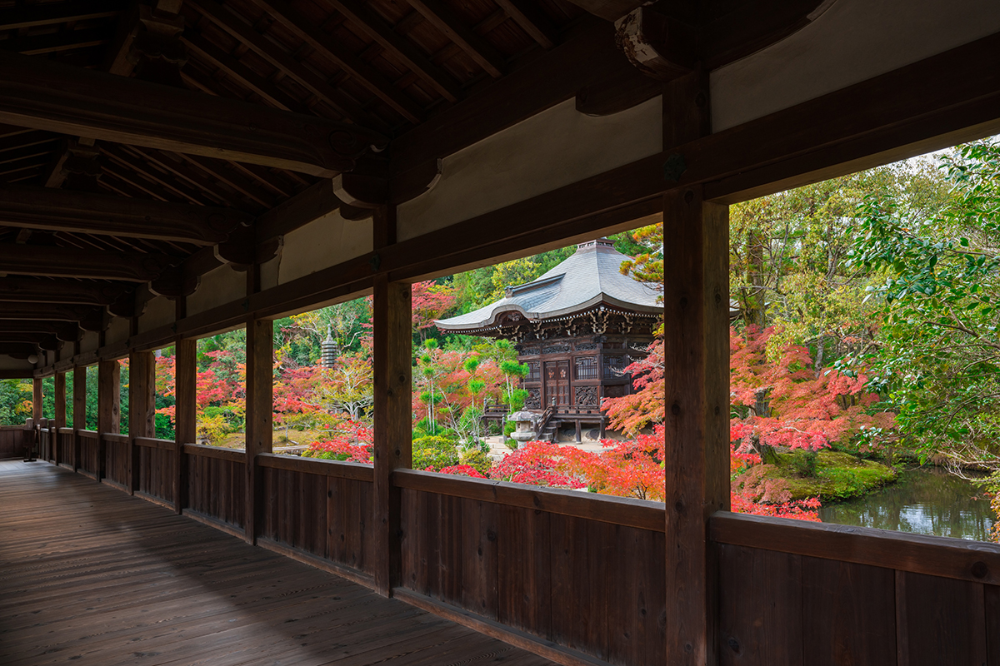
После храма можно зайти в чайную Bhagavan Arashiyama, которая открылась на территории Сэйрё-дзи. Название на санскрите означает «Будда». В больших окнах стоят деревья, и зелень отражается в чёрных лаковых столах. Сад за окнами разбит мастером, который работал и над садом храма Рурико-ин, а в ясный осенний день можно сесть на террасе.
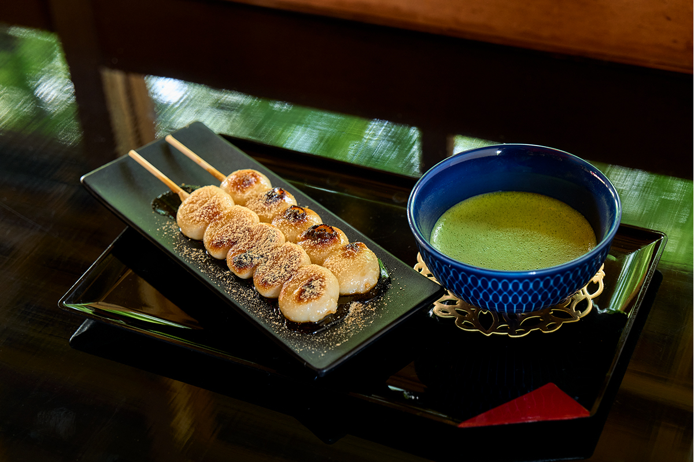
Храм Сэйрё-дзи (Сага Сяка-до)
- Адрес
- префектура Киото, Киото, Укё-ку, Сага-Сякадо-Фудзиноки-тё, 46
- Телефон
- +81 75-861-0343
- Часы работы
- 9:00–16:00, в апреле, мае, октябре и ноябре до 17:00
- Выходные
- нет
- Цены / Вход
- 400 иен, старшие и средние школьники 300 иен, младшие 200 иен. Сокровищницу открывают в апреле, мае, октябре и ноябре, общий билет с главным залом 700 иен, школьники 500 и 300 иен
Bhagavan Arashiyama
- Адрес
- префектура Киото, Киото, Укё-ку, Сага-Сякадо-Фудзиноки-тё, 46, на территории храма Сэйрё-дзи
- Часы работы
- 11:00–17:00
- Выходные
- нерегулярно
Прогулка
Соломенные крыши, тофу и река
Кроме клёнов Мидзуно советует ещё одну тему для прогулки: дома под соломенными крышами. В Арасияме и Сагано их ещё можно найти, хотя таких построек становится всё меньше: хижина Ракусися, чайная «Хираноя», храмы Гио-дзи и Такигути-дэра, музей кукол Сага и несколько кафе и лавок.
«В Арасияме и Сагано до сих пор живёт мир придворной поэзии и музыки, природа совсем рядом, и почти каждый год появляются новые милые места. Столичное изящество и деревенская простота здесь живут вместе, и такой красоты больше нигде нет»
фотограф Кацухико Мидзуно
«Хираноя»: чайная у ворот в горы
Чайная «Хираноя» работает с начала эпохи Эдо и славится рыбой аю. Летом здесь готовят аю, осенью грибы мацутакэ, зимой «ботан-набэ» с мясом кабана, весной горные травы.
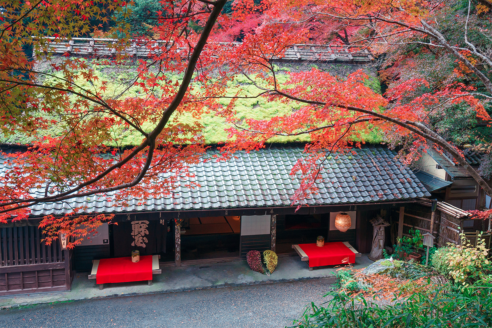
«Очень вкусные и домашние „синко“, клёцки из рисовой муки»
фотограф Кацухико Мидзуно
«Хираноя»
- Адрес
- префектура Киото, Киото, Укё-ку, Сага-Ториимото-Сэнъо-тё, 16
- Телефон
- +81 75-861-0359
- Часы работы
- 11:30–21:00
- Выходные
- нет
Ракусися: хижина поэта
Здесь была хижина Кёрая Мукаи (1651–1704), поэта хайку эпохи Гэнроку и ученика Басё. По участку стоят камни с высеченными хайку Кёрая, Басё, Кёси Такахамы (1874–1959) и других поэтов.
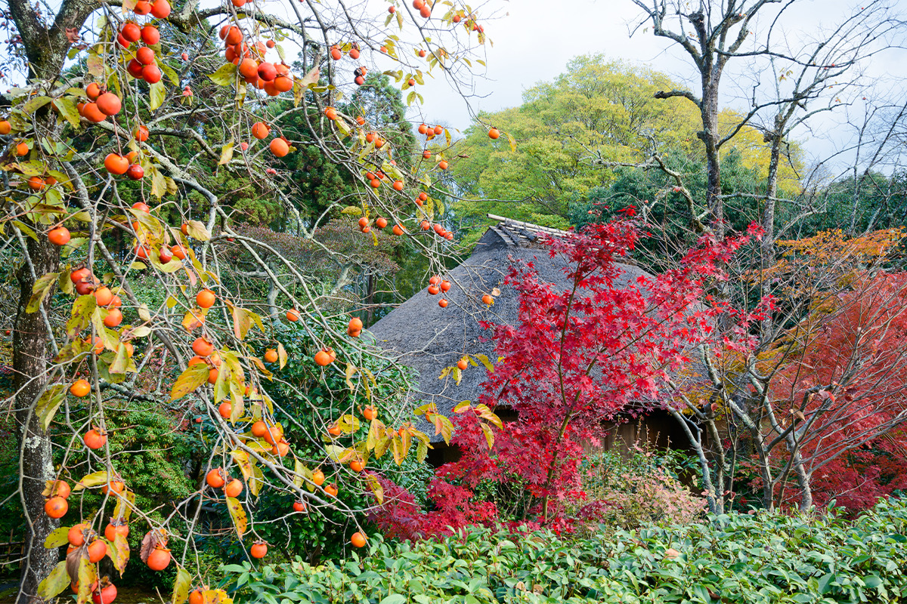
«Цветы и травы, связанные со стихами, радуют глаз круглый год»
фотограф Кацухико Мидзуно
Хижина Ракусися
- Адрес
- префектура Киото, Киото, Укё-ку, Сага-Огураяма-Химёдзин-тё, 20
- Телефон
- +81 75-881-1953
- Часы работы
- 9:00–17:00, в январе и феврале 10:00–16:00
- Выходные
- 31 декабря и 1 января
- Цены / Вход
- 300 иен
Oimatsu: сладости к чаю
Кондитерской Oimatsu больше 110 лет. При её магазине в Арасияме есть чайная «Гэнъи-ан»: свежие сладости можно купить с собой или съесть здесь же с маття или обжаренным чаем ходзитя.
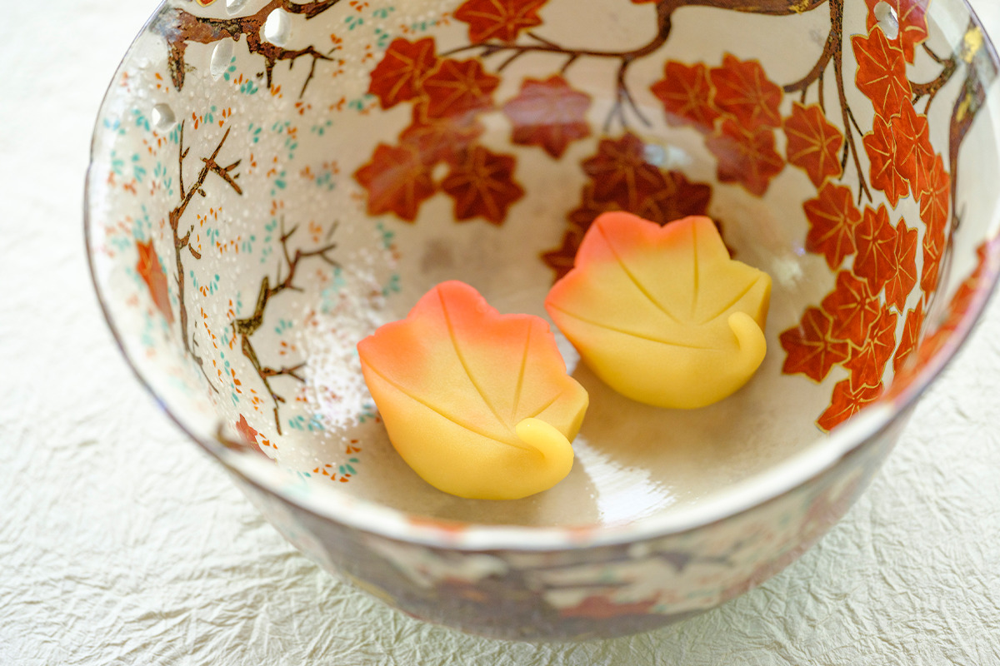
Oimatsu, магазин в Арасияме
- Адрес
- префектура Киото, Киото, Укё-ку, Сага-Тэнрюдзи-Сусукинобаба-тё, 20
- Телефон
- +81 75-881-9033
- Часы работы
- 9:00–17:00
- Выходные
- нерегулярно
«Сэйдзан Содо»: старейший юдофу
Тофу, сваренный в горячей воде, юдофу, считается фирменным блюдом Арасиямы и Сагано. «Сэйдзан Содо» стоит на территории Мётин-ин, малого храма при Тэнрю-дзи, и, по словам Мидзуно, это первое заведение, которое начало его подавать. В меню одно блюдо: обед «юдофу тэйсёку» с постными блюдами буддийской кухни сёдзин, 3 500 иен в 2021 году.
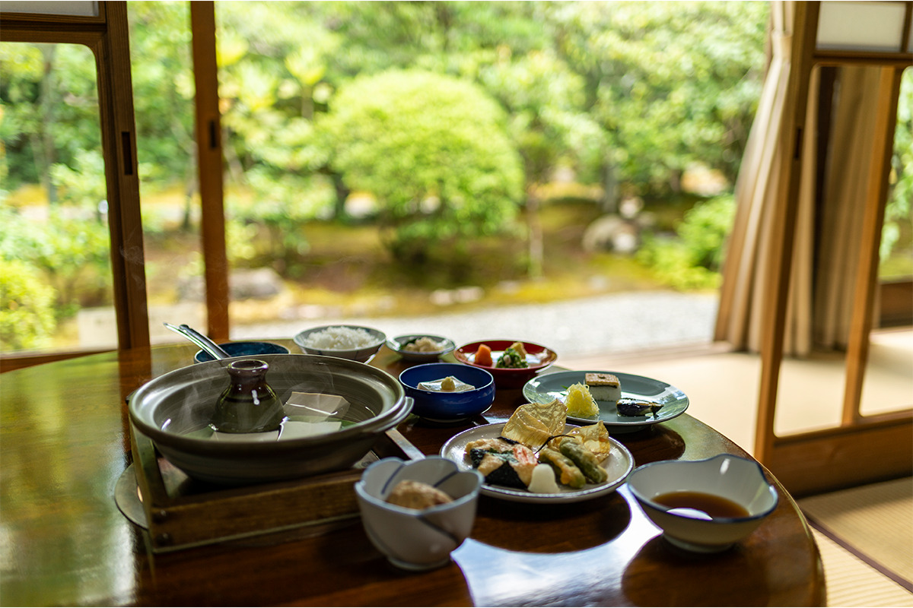
«Сэйдзан Содо»
- Адрес
- префектура Киото, Киото, Укё-ку, Сага-Тэнрюдзи-Сусукинобаба-тё, 63
- Телефон
- +81 75-861-1609
- Часы работы
- с 11:30, пока не закончится тофу (бронь до 14:00)
- Выходные
- среда и ещё один день в месяц нерегулярно
Спуск по реке Ходзу
Река Ходзу это средняя часть той же Оигавы. Лодки идут 16 км от города Камэока до Арасиямы, путь занимает около полутора часов. Осенью ущелье в клёнах, зимой в снегу, и в любой сезон оно красиво по-своему.
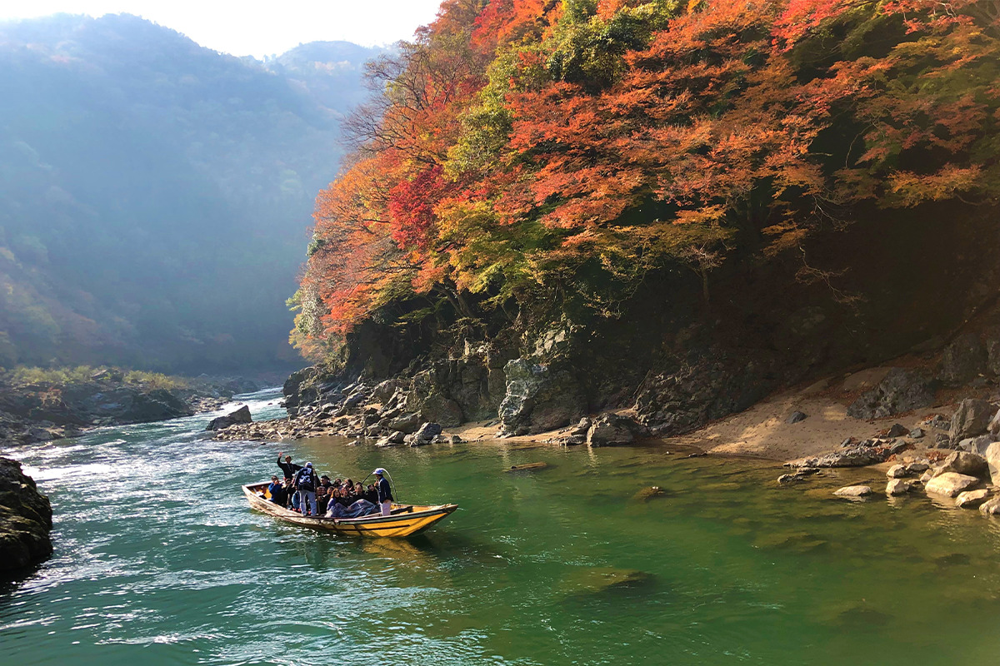
Спуск по реке Ходзу
- Адрес
- префектура Киото, Камэока, Ходзу-тё, Симо-Накадзима, 2
- Телефон
- +81 771-22-5846 (8:00–17:00)
- Часы работы
- отправление каждый час с 9:00 до 15:00 (рейс в 9:00 иногда отменяют); по выходным, праздникам и с 7 по 15 августа лодка уходит, как только наберётся
- Выходные
- с 29 декабря по 4 января и дни техосмотра
- Цены / Вход
- 4 100 иен, дети от 4 лет до младшей школы 2 700 иен
Фото: Кацухико Мидзуно, Марико Тая, Oimatsu, «Сэйдзан Содо», кооператив лодочников реки Ходзу.